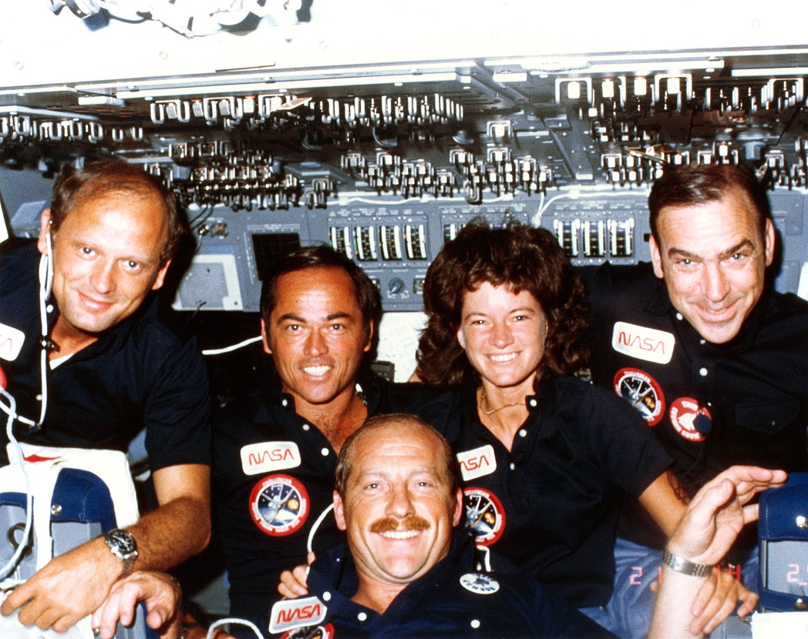

timeline

When Shuttle STS-7 took off on June 8th, 1983, Sally Ride made history as the first American woman to go to space. But before we go any further-- let’s rewind.

Part 1: Early Life
Sally began her undegraduate studies at Swarthmore College, and briefly considered pursuing a career as a professional tennis player (after seeing her play, Billie Jean King encouraged her to go pro). Instead, she opted to study physics and finished her bachelor’s degree at Stanford University. She stayed there, continuing on with her Master’s degree and eventually her PhD.

.jpg)
This chemical slide rule was used for determining the mass of atoms and molecules. Before pocket-sized electronic calcu-
lators became available in the 1970s, slide rules were used as an aid to complex mathematical operations. Ride used this device as a university student.
While completing the program, she saw a newspaper advertisement recruiting astronauts for NASA’s next mission. She decided to apply.

news2
Part 2: Training
In October of 1977 she went to the NASA Johnson Space Center to undergo medical tests and interviews as part of the selection process. Three months later, she was chosen with five other women and 29 men to create the first class of astronauts for the space shuttle program.

Ride began training as a mission specialist in preparation for her first mission, STS-7. Although she was training to be a scientist astronaut and not a pilot, she was required to spend 15 hours a month on board a T-38 jet practicing navigation and communication procedures while preparing herself for high performance flight. Part of the job entailed manually calcuating factors such as fuel burn, ground speed, and estimated time arrival. Here, the aviation slide rule came in handy. She enjoyed flying the T-38 so much so that she took lessons and got her pilot license.


On June 15, 1983, three days before launch aboard Space Shuttle Challenger, Sally Ride takes a last look at Houston before taking off in a T-38 jet, bound for NASA's Kennedy Space Center in Florida.

Part 3: Launch

On June 18th, 1983 the STS-7 six-day mission departed
Ride described the launch as "exhilarating, terrifying and overwhelming all at the same time."
Ride described the launch as "exhilarating, terrifying and overwhelming all at the same time."
The mission carried the largest crew to date, and included:
Robert L. Crippen (Commander),
Frederick H. Hauck (Pilot),
John M. Fabian (Mission Specialist),
Sally K. Ride, (Mission Specialist), and
Norman E. Thagard (Mission Specialist)
Robert L. Crippen (Commander),
Frederick H. Hauck (Pilot),
John M. Fabian (Mission Specialist),
Sally K. Ride, (Mission Specialist), and
Norman E. Thagard (Mission Specialist)

Part 4: Communication Satellites
One of the main goals of the mission was to deploy two communications satellites: ANIK C-2 for TELESAT Canada and PALAPA-B1 for Indonesia.
Palapa B is the second generation of satellites for Indonesia. Two of the communications satellites are being built for PERUMTEL, Indonesia's state-owned telecommunications company. With its 24 transponders, Palapa B was able to deliver voice, video, telephone and high-speed data services electronically linking Indonesia's many islands and bringing advanced telecommunications to the nation's 130 million inhabitants. Palapa operated at 108 degrees east longitude.
Palapa B is the second generation of satellites for Indonesia. Two of the communications satellites are being built for PERUMTEL, Indonesia's state-owned telecommunications company. With its 24 transponders, Palapa B was able to deliver voice, video, telephone and high-speed data services electronically linking Indonesia's many islands and bringing advanced telecommunications to the nation's 130 million inhabitants. Palapa operated at 108 degrees east longitude.


"The thing that I’ll remember most about the flight is that it was fun," said Ride. “In fact, I’m sure it was the most fun I’ll ever have in my life.”

Part 5: SPAS
Another important important goal of the mission was to deploy the Shuttle Pallet Satellite (SPAS-01). SPAS-01 was unique in that it was built to operate in the payload bay or be deployed by the RMS as a free-flying satellite.
The RMS, or Remote Manipulator System, was a robotic arm used on the Space Shuttle to deploy, maneuver, and capture payloads. One of Ride’s principal responsibilities was to operate the robotics arm to deploy and retrieve the SPAS-01. It was mounted with ten experiments to perform research in forming metal alloys in microgravity and use of remote sensing scanner. Seven Get Away Special canisters in cargo bay held variety of experiments, including ones studying affects of space on social behavior of ant colony in zero gravity.
The RMS, or Remote Manipulator System, was a robotic arm used on the Space Shuttle to deploy, maneuver, and capture payloads. One of Ride’s principal responsibilities was to operate the robotics arm to deploy and retrieve the SPAS-01. It was mounted with ten experiments to perform research in forming metal alloys in microgravity and use of remote sensing scanner. Seven Get Away Special canisters in cargo bay held variety of experiments, including ones studying affects of space on social behavior of ant colony in zero gravity.

first video

The mission was successful, and Ride completed the first of two in her career.
second video